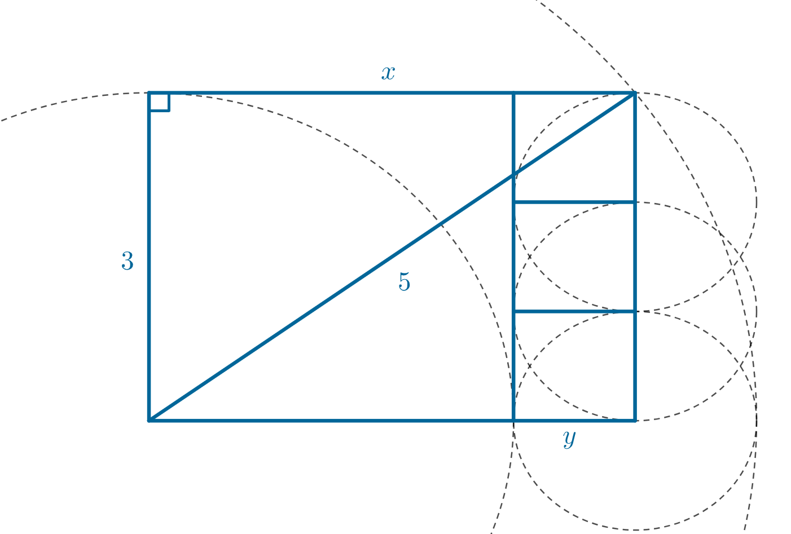
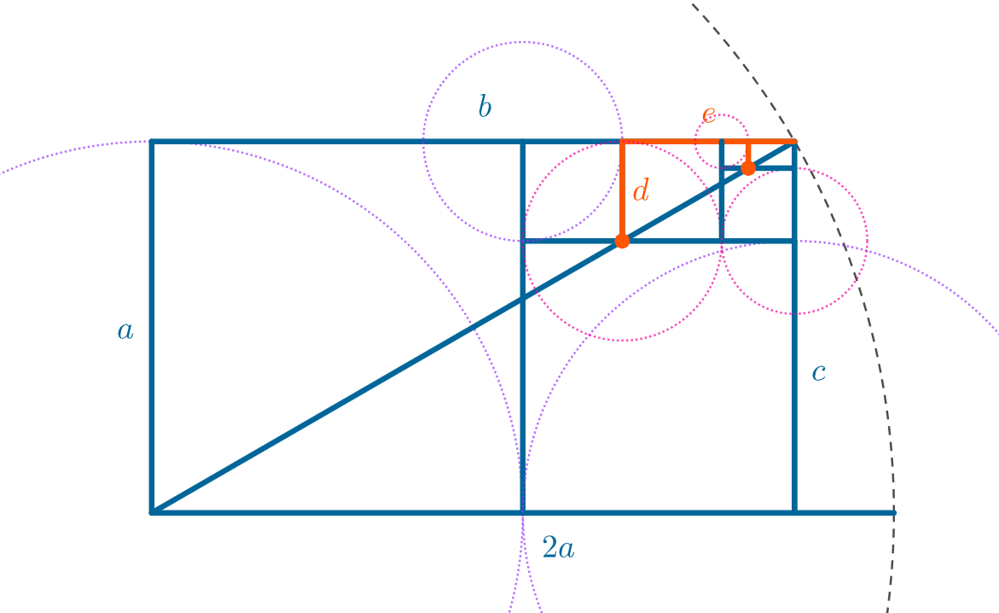

유리수는 두 정수 와 의 비로 표현될 수 있는 수입니다.
반면에 무리수는 유리수로 표현할 수 없는 실수를 의미하죠. 그래서 무리수는 정수와 관련이 없다고 생각하기 쉽습니다.
그러나 도형 문제를 풀다보면 피타고라스 정리에 의해 무리수가 빈번하게 나오지만 그 답은 정수비를 이루거나 도형이 어떤 특정한 위치에서 딱 맞아떨어지는 경우를 심심찮게 볼 수 있습니다. 이는 과연 우연일까요? 아니면 필연일까요?
테오도로스의 나선
테오도로스는 기원 전 5세기에 살았던 고대 그리스의 수학자로, 명확한 증거로 뒷받침되지는 않지만 프로타고라스의 제자이자 플라톤의 수학 선생님이었다고 알려져 있습니다.1 그는 비제곱수의 제곱근이 무리수임을 증명했다고 알려져있죠. 그의 증명방법은 알려져 있지 않지만 피타고라스의 정리를 이용하여 다음과 같이 길이가 , , , 인 선을 이용한 나선을 만들었을 것으로 추정합니다.

이 나선은 높이가 인 일련의 연속된 직각 삼각형들을 이용하여 구성되며, 각 삼각형의 밑변의 길이는 이전 삼각형의 빗변 길이와 같습니다. 평면 위의 한 점을 기준으로 길이가 인 직각 이등변 삼각형을 그립니다. 처음 생기는 직각 이등변 삼각형의 빗면의 길이는 피타고라스 정리에 의해 입니다. 다음으로 처음 만든 직각 이등변 삼각형의 빗변을 밑변으로 하고 높이가 인 직각 삼각형을 새로 그리면 두번째 생긴 직각삼각형의 빗변의 길이는 이 됩니다. 이제 이 과정을 반복하면 새로 생기는 직각 삼각형들의 빗변은 자연수의 제곱근 꼴을 가지는 것을 볼 수 있습니다.
이 나선을 구성하는 과정은 매우 간단하여 무리수와 제곱근의 개념을 탐구하기 좋습니다.
통약가능성(Commensurability)
고대 그리스에서 수학자들은 통약가능성(commensurability) 이라는 개념을 통해 수학을 탐구하고 발전시켰습니다. 두 선분의 길이가 서로 어떤 정수의 배수로 표현될 수 있는지를 나타내는 것으로, 이를 통해 두 선분이 어떤 공통의 단위로 측정될 수 있는지를 알 수 있었습니다.2 이러한 개념은 유리수와 무리수를 구분짓는 데 중요한 역할을 했습니다.
두 개의 이 아닌 실수 와 에 대하여 가 유리수인 경우 어떤 양이 공통 단위의 정수 배수로 표현될 수 있으므로 통약가능(commensurable) 하다고 부릅니다.3 이 개념은 같은 종류의 다른 수량으로 하나의 수량을 전체 수의 비율로 측정할 수 있는 능력에 기반합니다. 기하학의 맥락에서, 특히 선분과 관련하여, 통약가능성는 하나의 선분을 전체 수의 비율로 다른 선분으로 측정할 수 있는 능력을 나타냅니다.
이러한 주제의 역사적 배경으로서 피타고라스 학파의 그리스 철학자 히파수스(Hippassus of Metapontum)의 이야기가 있습니다. 이 이야기에 따르면, 히파수스는 피타고라스의 정리 를 사용하여 단위 정사각형의 대각선의 길이를 찾으려고 했습니다. 그의 노력은 정사각형의 변과 대각선이 통약가능하지 않다는 것을 드러냈으며, 이 길이는 두 정수의 비율로 표현될 수 없다는 것을 보여주었습니다. 이러한 발견은 그 당시에만 유리수가 존재할 수 있다고 믿었던 피타고라스의 신념과 상충했습니다. 히파수스의 통약불가능성 발견을 이해하기 전에, 피타고라스의 수에 대한 깊은 존경심을 이해하는 것이 중요합니다. 그들은 수를 모든 것의 본질로 보았으며, 유리수에 신성하고 철학적인 의미를 부여했습니다. 이러한 신념은 그들의 코스모로지, 윤리학, 영성에 녹아 있었으며, 우주의 모든 것은 유리수를 통해 설명될 수 있음을 주장했습니다. 그러나, 무리수(두 정수의 비율로 표현할 수 없는 수)의 발견은 숫자의 질서있는 세계에서 무의미의 징조로 간주되었습니다. 무리수는 피타고라스의 수학뿐만 아니라 그들의 철학에도 위협을 가했습니다.4
예를 들어 길이가 과 인 두 선분을 가지고 통약가능성을 살펴보겠습니다. 먼저 길이가 인 선분 안에 길이가 인 선분이 얼마나 들어갈 수 있는지 확인합니다. 길이가 인 선분이 개 들어가면, 길이가 인 선분이 남게 됩니다.
은 보다 길이가 작으므로 이제 길이가 인 선분으로 길이가 인 선분을 나누어 보겠습니다. 길이가 인 선분이 길이가 인 선분 안에 정확히 개 들어갈 수 있습니다.
이처럼 선분의 길이가 과 인 경우에 길이가 인 선분을 공통 단위로 사용하면 나머지가 더 이상 나오지 않고 딱 나누어 떨어지므로 두 선분은 서로 통약가능하다고 할 수 있습니다.
반면에 일때, 를 만족하는 두 선분은 서로 통약가능하지 않습니다. 길이가 인 선분에 길이가 인 선분을 빼면 길이가 인 선분이 남게됩니다. 이므로 이제 길이가 인 선분으로 길이가 인 선분을 나누어야 합니다. 그런데 이므로 다시 남는 부분이 생깁니다. 이 작업을 반복하면, 각 단계에서 새로운 선분이 생성되며, 이 선분들의 길이는 이전 단계의 선분의 비율을 계속 유지합니다. 따라서 두 선분은 서로 통약 가능하다고 할 수 없습니다.
아마 이 비율이 익숙하실 것입니다. 만약 를 이라 하고 라 한다면
가 됩니다. 양 변에 를 곱하면,
가 되며, 이를 재배열한 후 근의 공식을 이용하면
두 해를 얻을 수 있습니다.
그리고 이 값은 너무나도 유명한 비율인 황금비이며 무리수입니다.
이처럼 두 예시를 통해 두 선분의 길이가 서로 어떻게 관련되어 있는지(두 선분의 길이가 서로를 측정할 수 있다는 것)를 보는 통약가능성을 통해 무리수의 개념을 엿볼 수 있습니다.
도형에서의 무리수
이 개념을 조금 확장해서 의 비율을 갖는 직각삼각형을 보도록 하겠습니다. 우리는 피타고라스의 정리를 이용해 의 비율을 갖는 삼각형이 직각삼각형임을 어렵지 않게 알 수 있습니다.
그런데 피타고라스 정리가 알려지지 않았던 시기에는 의 비율을 갖는 선분이 직각삼각형을 이룬다는 것을 어떻게 알 수 있었을까요?

먼저 길이가 인 선분을 그린 후 선분의 한 점을 중심으로 하고 반지름의 길이가 인 원을 그리겠습니다. 다음으로 길이가 인 선분에서 고정된 점이 아닌 다른 한 점에서 만날 수 있게 수선의 발을 내려보면 다음과 같은 직각 삼각형을 얻을 수 있습니다. 이때 수선의 발을 내린 선분의 길이는 아직 모르기에 라 두고 작도를 이용해 길이를 찾아보겠습니다. 직각삼각형을 둘러싼 직사각형을 그린 후 이전에 그린 원의 중심으로 부터 길이가 인 원을 그리면 만나는 점을 찾습니다. 그렇다면 우리가 구해야 할 길이인 에서 을 뺀 값이므로 남은 길이를 라 하면 라 할 수 있습니다. 이제 남은 길이인 를 이용해 정사각형을 만들어 도형을 채워나가면 반지름이 인 원을 개 그렸을 때 정확하게 길이가 인 원과 일치하는 것을 볼 수 있습니다. 따라서 이고 임을 피타고라스 정리 없이도 찾을 수 있습니다.
이처럼 정수(유리수)들은 작도를 통해보면 하나의 길이를 다른 길이를 이용해 항상 표현할 수 있습니다. 그렇다면 반대로 무리수는 어떻게 될까요? 을 예로들어 작도 과정을 자세하게 살펴보도록 하겠습니다.

앞서 본 테오도로스의 나선을 보면 의 길이비를 가지는 선분이 직각삼각형을 만든다는 사실을 알 수 있습니다. 그러므로 길이의 비가 인 선을 이용하여 을 작도해보겠습니다. 길이가 인 선분의 한 점을 고정하고 길이가 배인 선분을 이용하여 원을 그립니다. 원과 의 길이를 가진 선분이 수직으로 만나는 선을 그리면 에 비해 배의 길이를 가지는 선분을 얻을 수 있는데 이 선분의 길이를 쉽게 라 하겠습니다. 이제 의 정수배를 이용하여 를 표현하기 위해 하나의 선분의 길이를 이용해 다른 선분의 길이를 찾아보겠습니다. 반지름의 길이가 인 원을 그리면 에서 반지름이 인 원과 밑변이 만나는 점이 생기는데 이 길이를 라 두겠습니다. 그리고 앞서 했던 방법과 마찬가지로 길이가 인 정사각형을 하나 그리면 더 이상 그림을 채울 수 없으므로 남은길이를 라 하고 이를 이용하여 다시 정사각형을 채우면 그림과 같이 됩니다.
그런데 여기서 특이한 점이 있습니다. 작은 정사각형을 만드는 두 선과 빗변이 정확히 한 점에서 만나는 것처럼 보이죠. 정말 이 점에서 정확히 만날까요? 만나는지 아닌지 찾는 방법은 대수적 방법을 사용하면 간단합니다. 라 할때, 다음 식을 만족하는지 확인하면 됩니다. 두 직각삼각형의 그 비율이 같다면 닮음이기에 자연스럽게 한 점에서 일치하기 때문이죠.
앞서 작도에서 길이를 정의했듯
이므로, 와 를 모두 와 를 이용해 나타낼 수 있습니다.
그렇다면 다음과 같은 식이 성립하므로
간단하게 라 두면,
세 선분이 한 점에서 만난다는 사실을 증명할 수 있죠. 그리고 이렇게 한 점에서 만난다는 별거 아닌 성질이 무리수의 특징을 제일 잘 나타내는 특별한 성질입니다. 왜냐하면 큰 직사각형과 작은 직사각형이 닮음을 이루면서 무리수는 선분이 선분을 나누는 과정이 멈추지 못하고 계속 반복될 수 밖에 없기 때문이죠. 유리수는 통약가능하므로 어느 순간 멈추는 반면 무리수는 프랙탈과 같은 자기유사성에 때문에 (정수만의 비율로)통약가능하지 않았던 것입니다. 그런데 이러한 프랙탈과 같은 성질은 무리수에 대한 다른 시각을 제공합니다. 무리수로 만든 비율이 특정한 지점에서 반복된다는 것을 이용하면 순환하는 무한 소수인 유리수처럼 무리수도 간단하게 표현하는 방법이 있지 않을까요?
연분수(Continued Fraction)
연분수란 다음과 같이 꽤나 독특한 형태의 중첩된 분수를 이용해 수를 표현하는 방법을 말합니다. 일반적으로 실수를 나타낼 때, 은 정수이며 나머지 은 양의 정수로 표현합니다.
예를 들어보죠. 를 연분수로 표현해보겠습니다. 의 정수부분을 찾기 위해 나누면 몫이 2가 됩니다. 이것이 연분수의 첫 번째 항 가 됩니다.
나머지를 이용하여 다음항을 찾기 위해 역수를 취한 후 다시 정수부분을 찾으면 다음과 같이 나타낼 수 있습니다. 이 때 역수의 몫 즉, 정수부분인 이 이 됩니다.
이 작업을 계속 반복하여 각 항을 찾으면 다음과 같이 를 연분수로 나타낼 수 있습니다.
그런데 이러한 표기는 보기 어렵기에 일반적인 연분수 표기법으로 나타내면 다음과 같이 간략하게 나타낼 수 있습니다.
유리수를 연분수로 표현하는 것은 분명히 그 자체로는 복잡해 보일 수 있습니다. 하지만 이렇게 표현함으로써 얻을 수 있는 수학적 통찰이나 계산의 효율성 등은 분명히 있습니다. 예를 들어 두 수 와 는 둘 중 어떤 수가 더 클지 바로 비교하기에는 어렵습니다. 그러나 두 수를 연분수 형태로 바꾸어보면
- 의 연분수 표현:
- 의 연분수 표현:
의 세 번째 항은 2이고, 의 세 번째 항은 1이므로, 이 보다 크다는 것을 직관적으로 비교할 수 있습니다.
그렇다면 무리수는 연분수로 표현하면 어떻게 될까요? 은 보다 크고 보다 작은 수이므로 다음과 같이 적을 수 있습니다. 소수부분인 을 연분수로 나타내기 위해 바꾸어 적으면
은 다음과 같이 바꿀 수 있고,
은 다음과 같이 나타낼 수 있으므로
을 연분수 표현으로 나타내면 다음과 같이 됩니다.
이때, 은 처음 나왔던 소수부분과 같으므로 이 과정을 반복하면 은 , 가 반복되는 연분수로 나타낼 수 있습니다. 은 무리수라 소수점 아래 수들은 규칙적이지 않지만 연분수로 나타내면 반복적인 수의 나열로 표시할 수 있는거죠.
그리고 계산에 사용했던 값들은 앞서 우리가 도형에서 구했던 길이와 일치하므로 작도를 통해서도 유도할 수 있습니다.
이렇게 무리수의 연분수표현을 이용하면 어떤 장점이 있을까요? 가장 큰 장점은 적당히 연분수를 “절단(Convergent)“하여 원하는 만큼 무리수를 근사할 수 있다는 것입니다. 이러한 방법은 복잡한 무리수를 유리수로 근사할 때, 단순한 정수 연산만을 필요로 하므로 계산이 상대적으로 간편합니다. 그리고 그 구조가 직관적이어서 이해하기도 쉽고 무리수가 어떤 유리수에 가깝다면 다른 방법보다 상대적으로 높은 정확도의 근사값을 얻을 수 있다는 장점도 있죠.
무리수는 정수의 비율로 표현할 수는 없지만 정수의 비율로 얼마든지 가깝게 근사할 수 있는 비율입니다. 연분수를 이용하면 무리수를 정수의 연속적인 비율로 근사할 수 있으며, 이 근사값은 도형의 특정 위치나 비율에 대응될 수 있습니다.(모든 제곱근은 연분수로 나타내면 주기적이라는 것이 증명되어있다.) 이러한 성질때문에 전혀 관계 없어보이던 무리수가 정수비로만 이루어져있던 도형에서 정확히 딱 맞아 떨어졌던 것은 아닐까요?